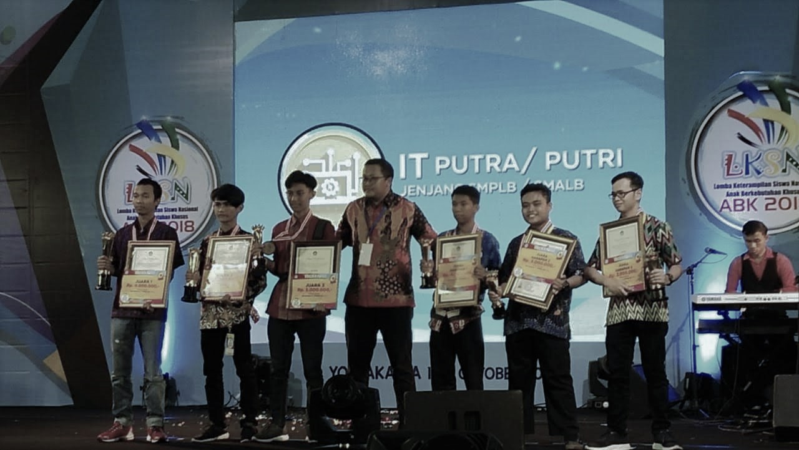
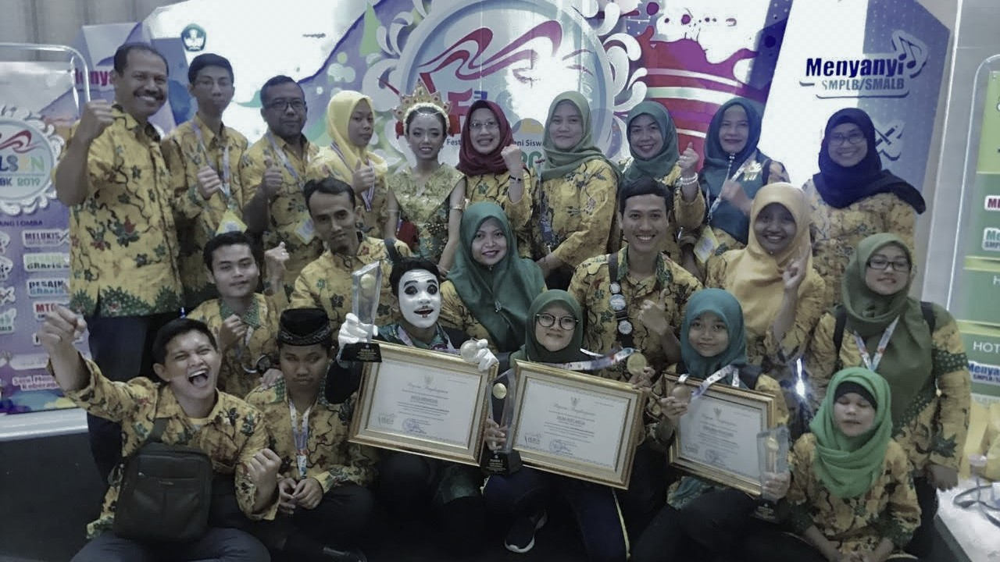

LOMBA LKS2N Di Yogjakarta
Yogjakarta, Okt 4, 2018
Alhamdulillah akhirnya saya bisa dapat piala juara itu hehe..
Lomba LKS2N singkatan dari apa? (Lomba Keterampilan Siswa Nasional) Peserta didikan SMPLB & SMALB khusus Disabilitas. Saya juga peserta didikan SMALB dan lomba apa? Lomba IT SMALB (Teknologi Informasi) namun, hanya pakai Wordpress dong BUKAN coding hehe, kemudian akhirnya tiba2 dapat dipanggil nama saya oleh Juri nya untuk kemenangan dan dapat piala juara nya adalah 2 Harapan (Juara 5).. Sebenarnya saya merasa kali pertama untuk dapat piala berharga bagiku itu dapat pengalaman luar biasa!
LOMBA FLS2N Di Lampung
Lampung, Sep 18, 2019
Aduh! saya belum bisa dapat juara apa2 saja tapi tidak apa2 tetap semangat itu sangat penting!
Lomba FLS2N singakatan dari apa? (Festival dan Lomba Seni Siswa Nasional) Peserta didikan SDLB, SMPLB, & SMALB khusus Disabilitas. Saya juga peserta didikan SMALB dan lomba apa lagi? Lomba Desain Grafis kemudian saya belum dapat dipanggil nama saya oleh orang itu berarti saya kalah ya tapi tidak apa-apa tetap semangat! dan juga udah berusaha kerja keras.. Saya benar-benar berterima kasih kepada tim kami telah bantu ke saya dan juga menghibur ke saya sedang sedih. Tidak, hanya bercanda hehe, Saya merasa terhormat ke tim kami dan juga guru saya untuk telah mengajari saya selama-lama sebelumnya.
Terima kasih!